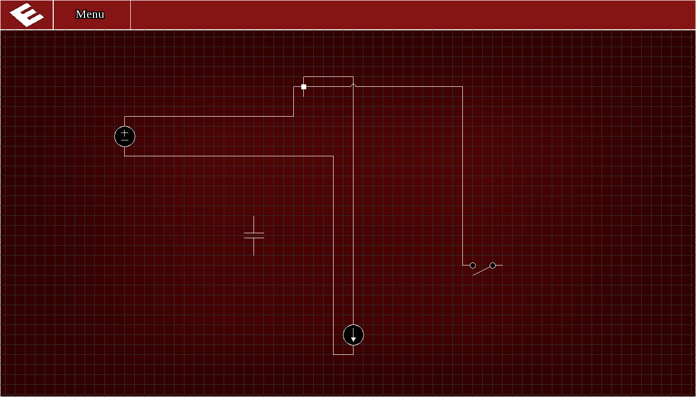
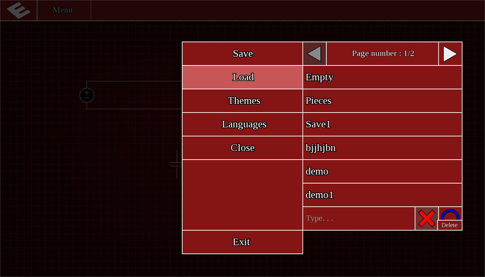
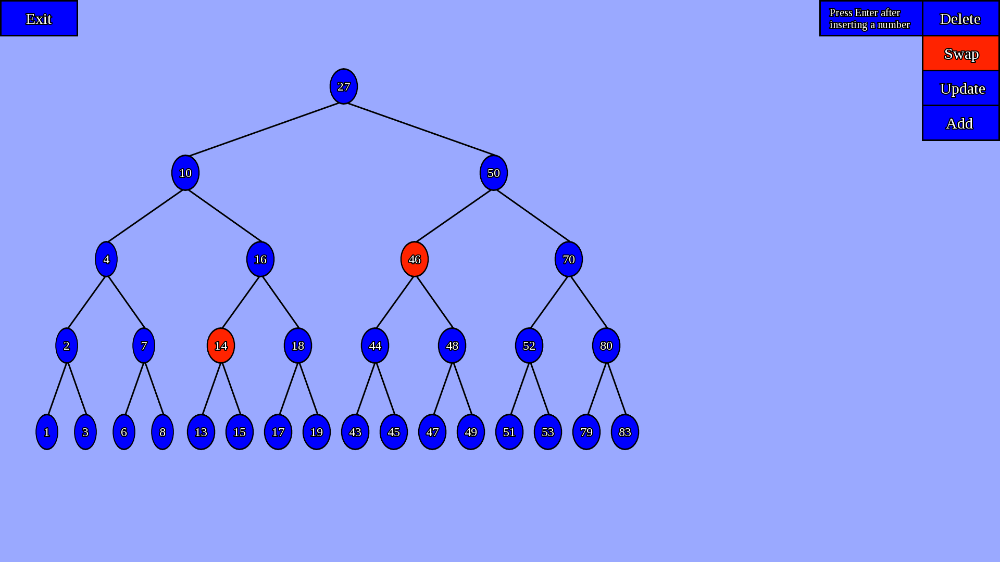
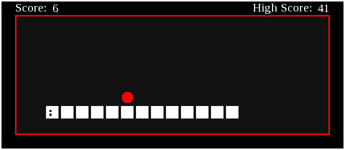

|  |
ElectronElectron is an app made for a university course ("Introducere in Programare") that gives the user the opportunity to interact with electrical circuits and also it is my first big project.I made it in C with a few C++ elements but, as far as graphics goes, I had a few issues.My univeristy recommended me to use SDL but being so outdated I decided I would rather learn and use SFML because it is more present and powerful. The application has some unique touches compared to the other projects that where presented for the course.I am talking about the ability to change themes and a fully functional file manager (language menu is also functional but not so unique.). The file manager allows the user to import files from external sources by scanning at the application startup for new files.It also has the options to delete or select any file you want and to create a new one with a name which the user gives via keyboard. As for the electrical circuits themselfs:you can add new ones by right-clicking on the canvas and selecting from a list which piece you want to place.Electron also has the option to drag or zoom the canvas and delete,move,rotate or link pieces togheter. |
|  | |
|  |
Binary Search Tree VisualiserThis app was made in my free time back in the day when I was just learning about binary trees and they seemed very interesting to me so I thought:Hey! Why not to do an app that allows me to play with them?So I did that! In order to make it I used C and SFML.At first this sounded very easy but it proved somewhat challenging to scale the tree to the screen and took some time until I got that right.But finnaly, I got it working.The app allows the user to add which elements he would want,whenever.It also has the option to delete nodes and after that the binary tree would be recalculated.The swap option allows for ,well,swapping and it can break the tree because if you swap two wrong nodes the tree would lose it`s propriety. In order to select nodes you have to just click them and they will turn red(that also it proved quite interesting to archive).After you clicked the nodes you wanted to, you just need to press "Update" to recalculate the tree after the change you made. |
|  |
SnakeSnake was made as a challange to myself to create a game in a day in order to learn SFML and play around a little.Normally,I used SFML but also C. It proved fun making it and I should do spontaneous projects like that more often.I challanged myself to create the game without looking up for any tips or shortcuts. Not much to talk about here:I made the game by using a grid the snake would move into and also adding four states for it`s direction.The moment he touches anything besides blank spaces or the fruit he dies.The fruit allows him to grow als is spawned randomly in any blank space. |